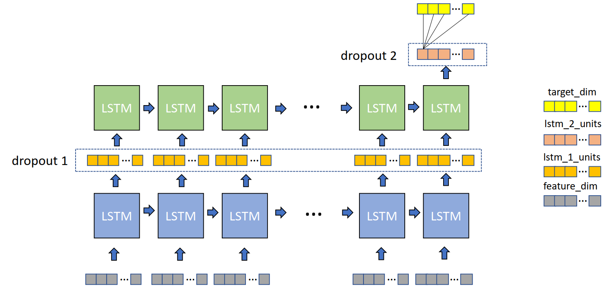

LSTM
VanillaLSTM Algorithm
VanillaLSTM is constructed by two LSTM layers, two dropout layers and a dense layer. The flow chart is clearly plotted in the following plot. A more detailed LSTM unit structure can be found in here.

You can find API instructions here.